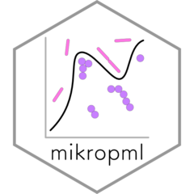

Generic function to calculate mean performance curves for multiple models
Source:R/performance.R
calc_mean_perf.RdUsed by calc_mean_roc() and calc_mean_prc().
Arguments
- sensspec_dat
data frame created by concatenating results of
calc_model_sensspec()for multiple models.- group_var
variable to group by (e.g. specificity or recall).
- sum_var
variable to summarize (e.g. sensitivity or precision).